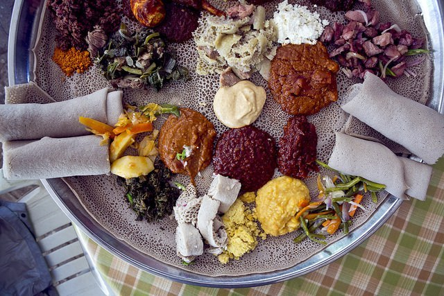
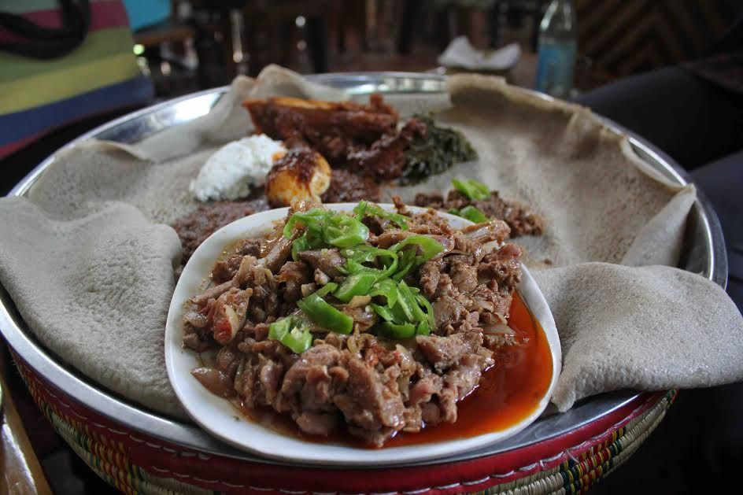

Injera (sourdough flatbread)
“Injera is not a dish itself, but the vehicle for almost every single meal in Ethiopia,” says Richman. She’s not kidding: When I was in Addis (as everyone calls it) last year, even a breakfast of stir-fried injera, known as fir-fir, was served with even more injera on the side. As mentioned, eating Ethiopian almost always means eating with your hands. In lieu of silverware, injera is used to scoop up whatever is served, from collard greens to lentils to nubs of meat. Emily Post acolytes needn’t freak out, since injera has its own etiquette. As Richman instructed me last year, first you rip off a piece of bread from the communal supply, then you rip off smaller pieces from your portion as you go, using them to scoop up individual bites. All of this should be done with the right hand. (Here’s a video primer courtesy of Addis Eats to help you master your injera game.) Injera is also a superfood. The flatbread’s main ingredient is teff, “an ancient grain that was first cultivated in Ethiopia,” explains Addis Eats cofounder Xavier Curtis. “It’s incredibly high in protein, calcium, and iron and also naturally gluten-free.” If you’ve ever eaten injera Stateside and found it to be heavy, it’s probably made with cheaper rice flour, which “gives a similar consistency, but it’s heavy,” he says.

Tibs (sautéed meat chunks)
The country’s “go-to meat dish,” as Curtis describes it, is usually made from beef cut into small chunks and sautéed in butter or oil with onions, garlic, hot pepper and rosemary. You’ll find this on most general Ethiopian menus, served with injera, naturally.